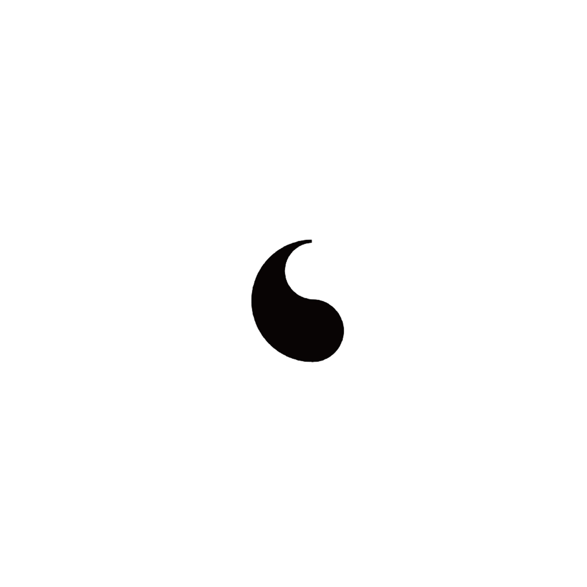
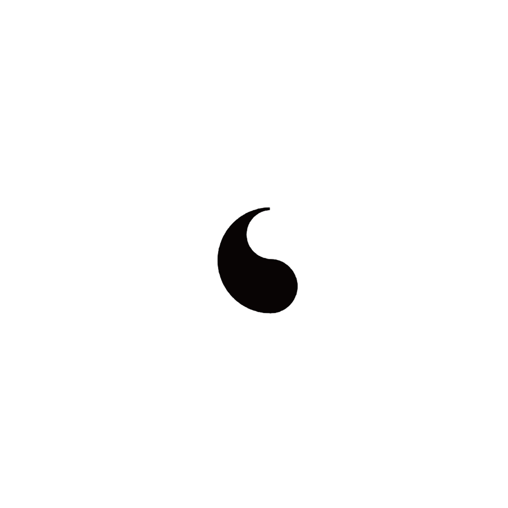

2022
[24절기 레터링]
24절기 프로젝트에 참여한 작업물입니다.
음과 양이 같아지며 봄을 나눈다는 뜻을 지닌 24번째 중
4번째 절기 '춘분'을 작업했습니다.
추위가 물러가고 본격적인 봄이 시작되는 절기인 만큼 자음과 모음의
끝맺음을 올려 지면에서 생명이 솟아오르는 듯한 느낌을 주고자 했습니다.
또한 음양 형태를 ㅊ에 넣어 의미를 담아 음양과 따뜻한 봄의 기운이 느껴지는
춘분을 표현했습니다.
 


elevated form of endings
yin and yang.:｡